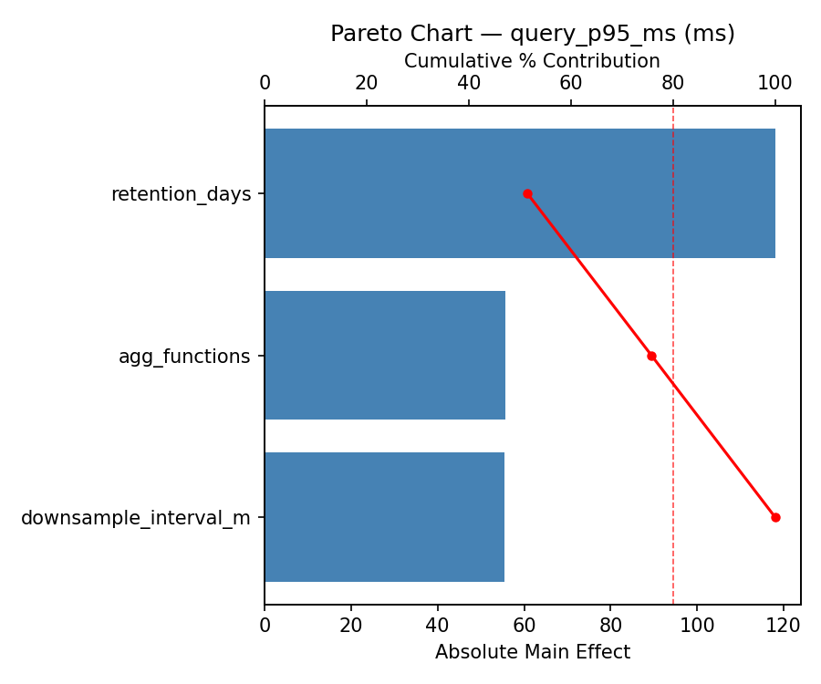
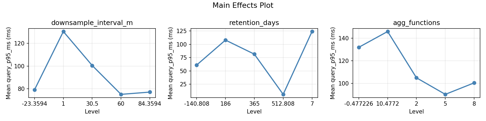
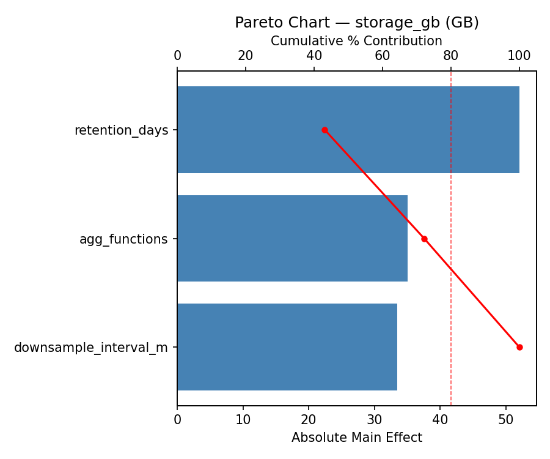
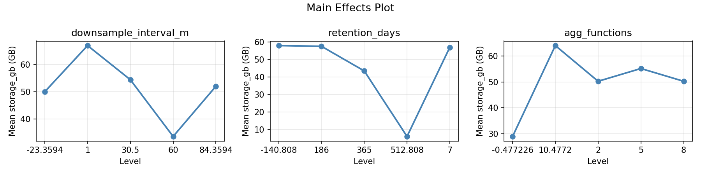
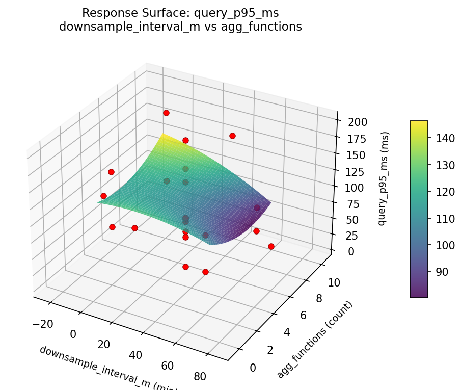
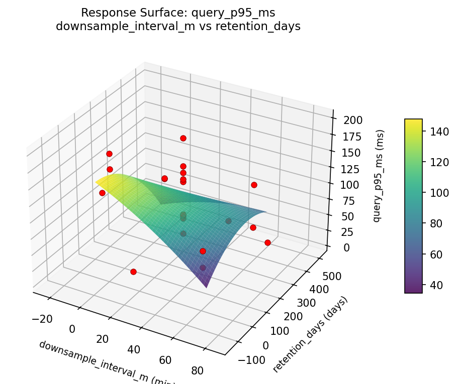
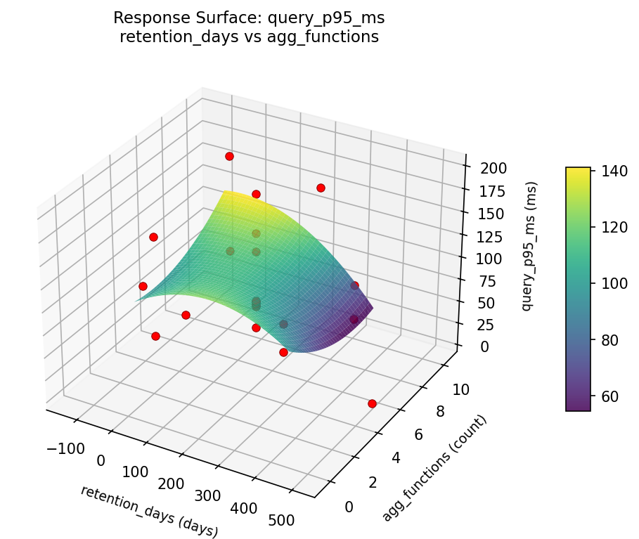
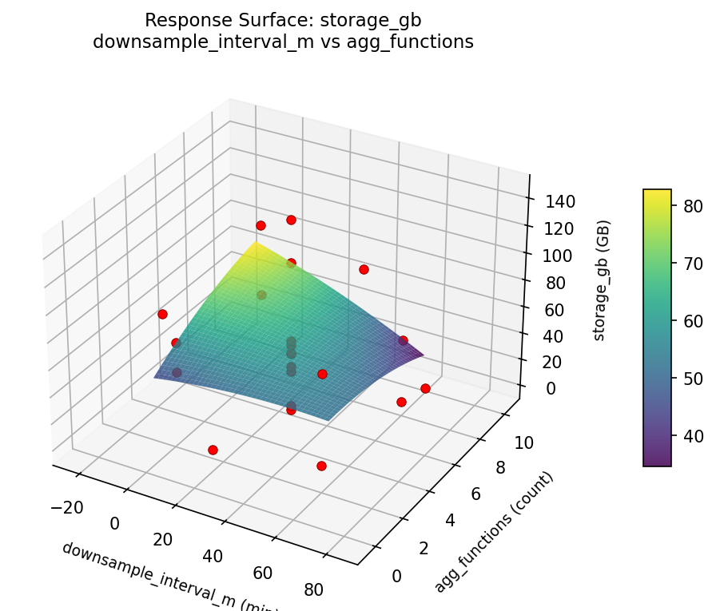
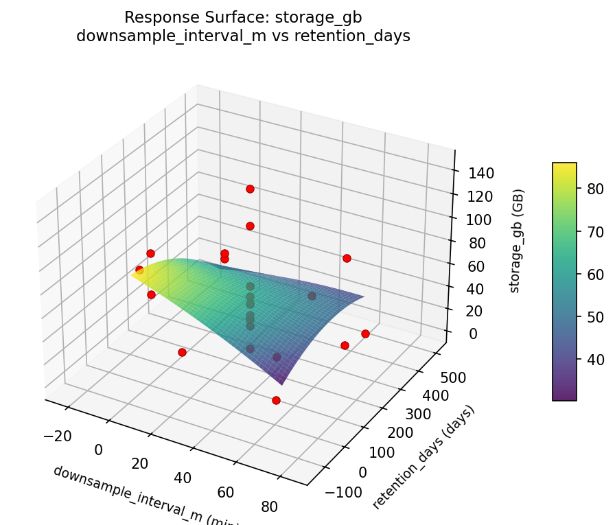
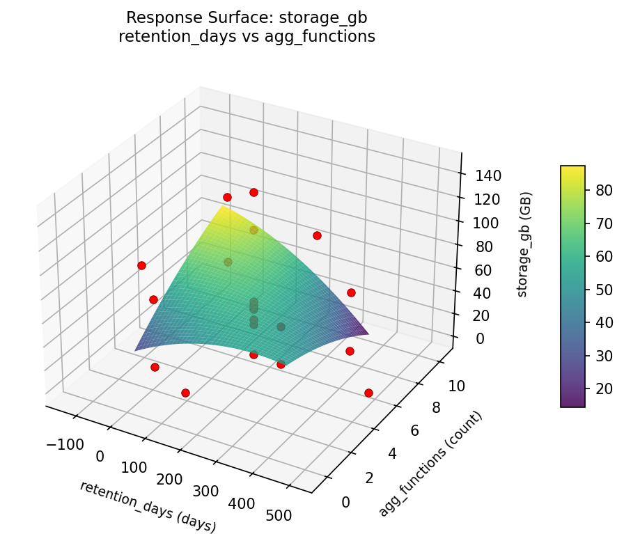

Experimental Setup
Factors
| Factor | Low | High | Unit |
|---|
downsample_interval_m | 1 | 60 | min |
retention_days | 7 | 365 | days |
agg_functions | 2 | 8 | count |
Fixed: db_engine = timescaledb, ingestion_rate = 100000
Responses
| Response | Direction | Unit |
|---|
query_p95_ms | ↓ minimize | ms |
storage_gb | ↓ minimize | GB |
Configuration
{
"metadata": {
"name": "Time-Series Downsampling",
"description": "Central Composite design for downsampling interval, retention policy, and aggregation for query speed"
},
"factors": [
{
"name": "downsample_interval_m",
"levels": [
"1",
"60"
],
"type": "continuous",
"unit": "min"
},
{
"name": "retention_days",
"levels": [
"7",
"365"
],
"type": "continuous",
"unit": "days"
},
{
"name": "agg_functions",
"levels": [
"2",
"8"
],
"type": "continuous",
"unit": "count"
}
],
"fixed_factors": {
"db_engine": "timescaledb",
"ingestion_rate": "100000"
},
"responses": [
{
"name": "query_p95_ms",
"optimize": "minimize",
"unit": "ms"
},
{
"name": "storage_gb",
"optimize": "minimize",
"unit": "GB"
}
],
"settings": {
"operation": "central_composite",
"test_script": "use_cases/45_time_series_downsampling/sim.sh"
}
}
Experimental Matrix
The Central Composite Design produces 22 runs. Each row is one experiment with specific factor settings.
| Run | downsample_interval_m | retention_days | agg_functions |
|---|
| 1 | 30.5 | 186 | 5 |
| 2 | 60 | 7 | 8 |
| 3 | 1 | 365 | 2 |
| 4 | 30.5 | 512.808 | 5 |
| 5 | 30.5 | 186 | 5 |
| 6 | -23.3594 | 186 | 5 |
| 7 | 30.5 | 186 | -0.477226 |
| 8 | 30.5 | 186 | 5 |
| 9 | 60 | 365 | 2 |
| 10 | 84.3594 | 186 | 5 |
| 11 | 30.5 | 186 | 5 |
| 12 | 30.5 | -140.808 | 5 |
| 13 | 30.5 | 186 | 5 |
| 14 | 1 | 7 | 8 |
| 15 | 30.5 | 186 | 5 |
| 16 | 60 | 7 | 2 |
| 17 | 30.5 | 186 | 10.4772 |
| 18 | 60 | 365 | 8 |
| 19 | 30.5 | 186 | 5 |
| 20 | 1 | 7 | 2 |
| 21 | 1 | 365 | 8 |
| 22 | 30.5 | 186 | 5 |
Step-by-Step Workflow
1
Preview the design
$ python doe.py info --config use_cases/45_time_series_downsampling/config.json
2
Generate the runner script
$ python doe.py generate --config use_cases/45_time_series_downsampling/config.json \
--output use_cases/45_time_series_downsampling/results/run.sh --seed 42
3
Execute the experiments
$ bash use_cases/45_time_series_downsampling/results/run.sh
4
Analyze results
$ python doe.py analyze --config use_cases/45_time_series_downsampling/config.json
5
Get optimization recommendations
$ python doe.py optimize --config use_cases/45_time_series_downsampling/config.json
6
Generate the HTML report
$ python doe.py report --config use_cases/45_time_series_downsampling/config.json \
--output use_cases/45_time_series_downsampling/results/report.html
Features Exercised
| Feature | Value |
|---|
| Design type | central_composite |
| Factor types | continuous (all 3) |
| Arg style | double-dash |
| Responses | 2 (query_p95_ms ↓, storage_gb ↓) |
| Total runs | 22 |
Analysis Results
Generated from actual experiment runs using the DOE Helper Tool.
Response: query_p95_ms
Top factors: retention_days (38.4%), downsample_interval_m (36.7%), agg_functions (24.9%).
Pareto Chart

Main Effects Plot

Response: storage_gb
Top factors: downsample_interval_m (34.5%), retention_days (33.9%), agg_functions (31.6%).
Pareto Chart

Main Effects Plot

Response Surface Plots
3D surfaces fitted with quadratic RSM. Red dots are observed data points.
query p95 ms downsample interval m vs agg functions

query p95 ms downsample interval m vs retention days

query p95 ms retention days vs agg functions

storage gb downsample interval m vs agg functions

storage gb downsample interval m vs retention days

storage gb retention days vs agg functions

Full Analysis Output
=== Main Effects: query_p95_ms ===
Factor Effect Std Error % Contribution
--------------------------------------------------------------
retention_days 114.0000 10.4464 38.4%
downsample_interval_m 109.0000 10.4464 36.7%
agg_functions 73.7500 10.4464 24.9%
=== Summary Statistics: query_p95_ms ===
downsample_interval_m:
Level N Mean Std Min Max
------------------------------------------------------------
-23.3594 1 189.0000 0.0000 189.0000 189.0000
1 4 89.7500 63.1843 6.0000 156.0000
30.5 12 84.2500 36.1415 46.0000 166.0000
60 4 136.2500 48.6784 79.0000 198.0000
84.3594 1 80.0000 0.0000 80.0000 80.0000
retention_days:
Level N Mean Std Min Max
------------------------------------------------------------
-140.808 1 52.0000 0.0000 52.0000 52.0000
186 12 88.5000 39.7938 46.0000 189.0000
365 4 127.0000 30.5287 84.0000 156.0000
512.808 1 166.0000 0.0000 166.0000 166.0000
7 4 99.0000 79.6785 6.0000 198.0000
agg_functions:
Level N Mean Std Min Max
------------------------------------------------------------
-0.477226 1 82.0000 0.0000 82.0000 82.0000
10.4772 1 76.0000 0.0000 76.0000 76.0000
2 4 149.7500 36.6640 113.0000 198.0000
5 12 93.5000 46.9613 46.0000 189.0000
8 4 76.2500 53.4564 6.0000 136.0000
=== Main Effects: storage_gb ===
Factor Effect Std Error % Contribution
--------------------------------------------------------------
downsample_interval_m 61.9167 7.4988 34.5%
retention_days 60.7500 7.4988 33.9%
agg_functions 56.7500 7.4988 31.6%
=== Summary Statistics: storage_gb ===
downsample_interval_m:
Level N Mean Std Min Max
------------------------------------------------------------
-23.3594 1 103.0000 0.0000 103.0000 103.0000
1 4 62.2500 45.7921 6.0000 115.0000
30.5 12 41.0833 22.7455 0.0000 68.0000
60 4 66.0000 54.0185 29.0000 146.0000
84.3594 1 48.0000 0.0000 48.0000 48.0000
retention_days:
Level N Mean Std Min Max
------------------------------------------------------------
-140.808 1 9.0000 0.0000 9.0000 9.0000
186 12 47.2500 25.8707 0.0000 103.0000
365 4 58.5000 38.7255 29.0000 115.0000
512.808 1 68.0000 0.0000 68.0000 68.0000
7 4 69.7500 58.6536 6.0000 146.0000
agg_functions:
Level N Mean Std Min Max
------------------------------------------------------------
-0.477226 1 35.0000 0.0000 35.0000 35.0000
10.4772 1 49.0000 0.0000 49.0000 49.0000
2 4 91.7500 50.4604 29.0000 146.0000
5 12 46.6667 28.7602 0.0000 103.0000
8 4 36.5000 21.0476 6.0000 51.0000
Optimization Recommendations
=== Optimization: query_p95_ms ===
Direction: minimize
Best observed run: #2
downsample_interval_m = 1
retention_days = 7
agg_functions = 2
Value: 6.0
RSM Model (linear, R² = 0.2711, Adj R² = 0.1496):
Coefficients:
intercept +99.2727
downsample_interval_m +9.3884
retention_days -5.4034
agg_functions +28.5417
RSM Model (quadratic, R² = 0.6749, Adj R² = 0.4311):
Coefficients:
intercept +83.1280
downsample_interval_m +9.3884
retention_days -5.4034
agg_functions +28.5418
downsample_interval_m*retention_days -29.1250
downsample_interval_m*agg_functions -12.6250
retention_days*agg_functions -7.1250
downsample_interval_m^2 -6.9276
retention_days^2 +20.5223
agg_functions^2 +10.6224
Curvature analysis:
retention_days coef=+20.5223 convex (has a minimum)
agg_functions coef=+10.6224 convex (has a minimum)
downsample_interval_m coef=-6.9276 concave (has a maximum)
Notable interactions:
downsample_interval_m*retention_days coef=-29.1250 (antagonistic)
downsample_interval_m*agg_functions coef=-12.6250 (antagonistic)
retention_days*agg_functions coef=-7.1250 (antagonistic)
Predicted optimum (from quadratic model):
downsample_interval_m = 60
retention_days = 7
agg_functions = 8
Predicted value: 174.3037
Model quality: Moderate fit — use predictions directionally, not precisely.
Factor importance:
1. agg_functions (effect: 133.8, contribution: 49.2%)
2. retention_days (effect: 101.5, contribution: 37.3%)
3. downsample_interval_m (effect: 36.8, contribution: 13.5%)
=== Optimization: storage_gb ===
Direction: minimize
Best observed run: #16
downsample_interval_m = 30.5
retention_days = 186
agg_functions = 5
Value: 0.0
RSM Model (linear, R² = 0.1109, Adj R² = -0.0372):
Coefficients:
intercept +52.5909
downsample_interval_m +6.6462
retention_days +1.2211
agg_functions +12.2824
RSM Model (quadratic, R² = 0.6122, Adj R² = 0.3213):
Coefficients:
intercept +28.6699
downsample_interval_m +6.6462
retention_days +1.2211
agg_functions +12.2825
downsample_interval_m*retention_days -10.5000
downsample_interval_m*agg_functions -4.7500
retention_days*agg_functions -7.2500
downsample_interval_m^2 +0.7105
retention_days^2 +18.8605
agg_functions^2 +16.3105
Curvature analysis:
retention_days coef=+18.8605 convex (has a minimum)
agg_functions coef=+16.3105 convex (has a minimum)
downsample_interval_m coef=+0.7105 convex (has a minimum)
Notable interactions:
downsample_interval_m*retention_days coef=-10.5000 (antagonistic)
retention_days*agg_functions coef=-7.2500 (antagonistic)
downsample_interval_m*agg_functions coef=-4.7500 (antagonistic)
Predicted optimum (from quadratic model):
downsample_interval_m = 30.5
retention_days = 186
agg_functions = 10.4772
Predicted value: 105.4624
Model quality: Moderate fit — use predictions directionally, not precisely.
Factor importance:
1. agg_functions (effect: 99.7, contribution: 51.7%)
2. retention_days (effect: 70.1, contribution: 36.4%)
3. downsample_interval_m (effect: 23.0, contribution: 11.9%)